cucino.net
Livia condivide le sue ricette su cucino.net.
Registrati
per pubblicare le tue. È gratis!
Livia
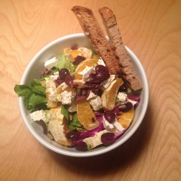
Insalata con arance, feta e olive
24 Mar 2014
Torta arance e mandorle
16 Mar 2013
Risotto con radicchio e taleggio
17 Gen 2012
Pasta all'uovo (impastata a...
17 Gen 2012
Salmone al forno con contorno di...
17 Gen 2012
Pappardelle ricotta e salsiccia
21 Feb 2011
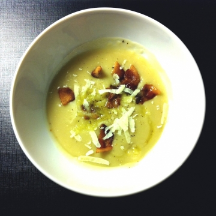
Purè di fave
09 Feb 2011
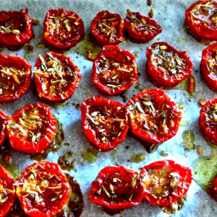
Pomodorini confit
30 Gen 2011
Linzertorte
22 Gen 2011
Insalata autunnale
22 Gen 2011
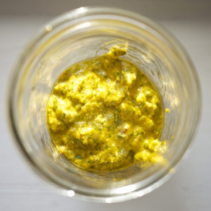
Il pesto della Chiara
22 Gen 2011
Insalata Estiva 2
16 Lug 2010
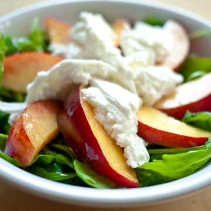
Insalata Estiva 1
13 Lug 2010
Pasta zucchine e calamari
07 Lug 2010
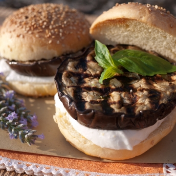
Cheeseburger Vegetariano
30 Giu 2010
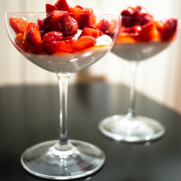
Coppa ricotta e fragole
14 Giu 2010
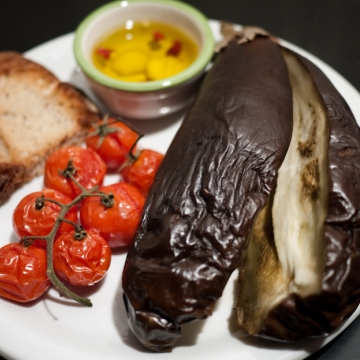
Melanzana spalmabile
12 Giu 2010
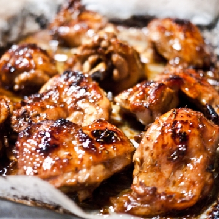
Sticky lemon chicken
01 Giu 2010
Tartufini di caprino noci e...
01 Giu 2010
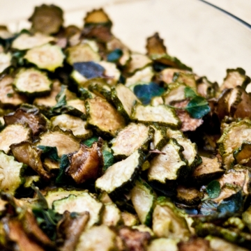
Zucchine alla scapece
01 Giu 2010
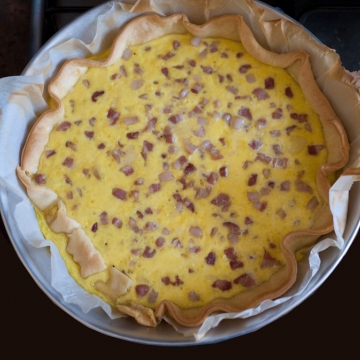
Quiche Lorraine
01 Giu 2010
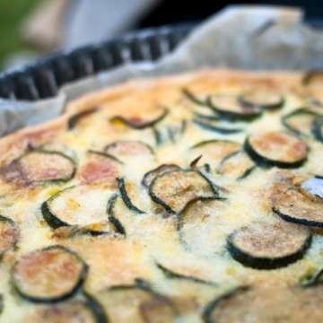
Quiche di zucchine
01 Giu 2010
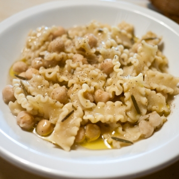
Pasta e ceci
15 Mag 2010
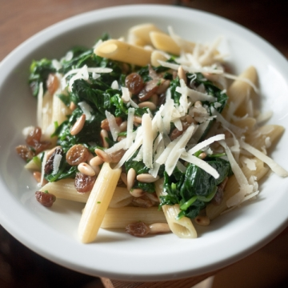
Pasta con gli spinaci
15 Mag 2010
Tortino alla scarola
05 Mag 2010
Torta con noci e cioccolato
01 Apr 2010
Tortine all'olio d'oliva
01 Apr 2010
Insalata pollo e avocado
01 Apr 2010
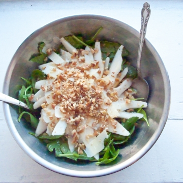
Insalata spinaci pere e noci
01 Apr 2010
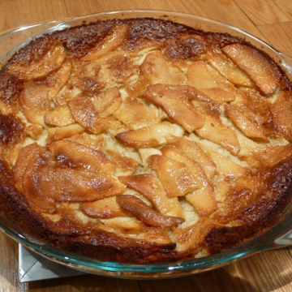
Bolzano apple cake
01 Apr 2010
Insalata con melograno
01 Apr 2010
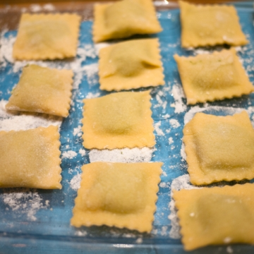
Ravioli ricotta e spinaci
01 Apr 2010
Tortino zucchine e ricotta
01 Apr 2010
Pan di spagna
01 Apr 2010
Crema pasticcera
01 Apr 2010
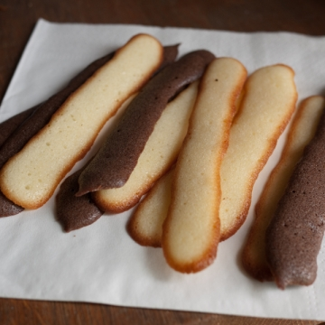
Lingue di gatto
01 Apr 2010
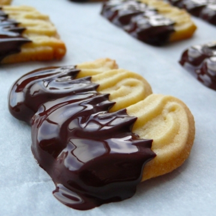
Spritzgeback
01 Apr 2010
Pancakes
01 Apr 2010